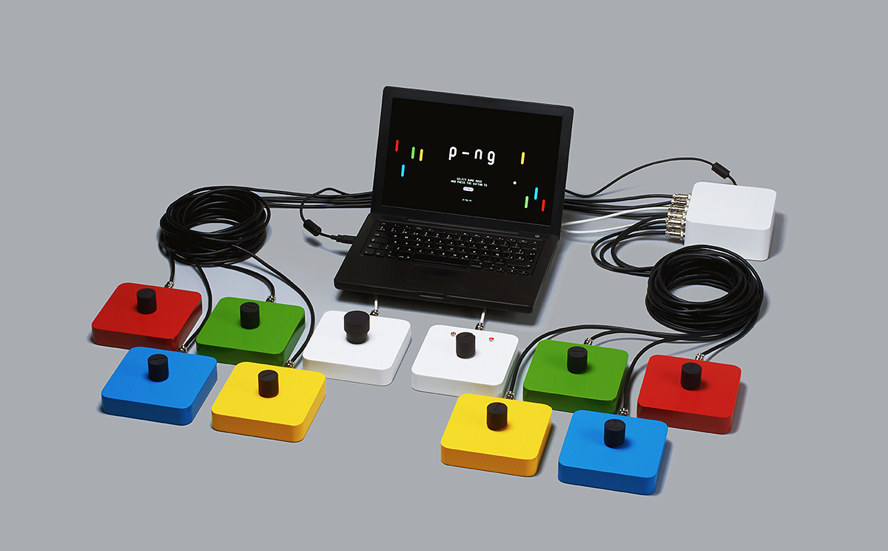

reconstruccio d'un dels primers videojocs de la historia, el exitós Pong [1]. basantnos en la jugabilitat que te el joc original i en la coneixement adquirit en projectes similars que vam realitzar previament [2] [3], fem un plantejament que inclou mes jugadors, amb lanim de multiplicar la experiencia, no nomes pels que juguen, sino tambe pels espectadors.
el joc nomes te tres pantalles. la pantalla d'inici, la de joc i la de resultats. la partida dura nomes 1 minut i mig, i els modificadors de joc poden girar la partida en un tancar i obrir d'ulls. la pantalla de resultats mostra la puntuacio de equip i la personal.
es interessant veure com el joc sedueix a la gent amb la seva simplicitat, de joc, linies i colors. la possibilitat de jugar en equips es un altre atractiu. el compte enrere, els modificadors de partida i l'acceleracio del joc asseguren l'atencio de jugadors i espectadors fins al ultim segon de la partida.
analog interactive demo: flyers con confeti dentro de bolsa de plastico (promotional flyers - circle cutted color papers inside a plastic sleeve